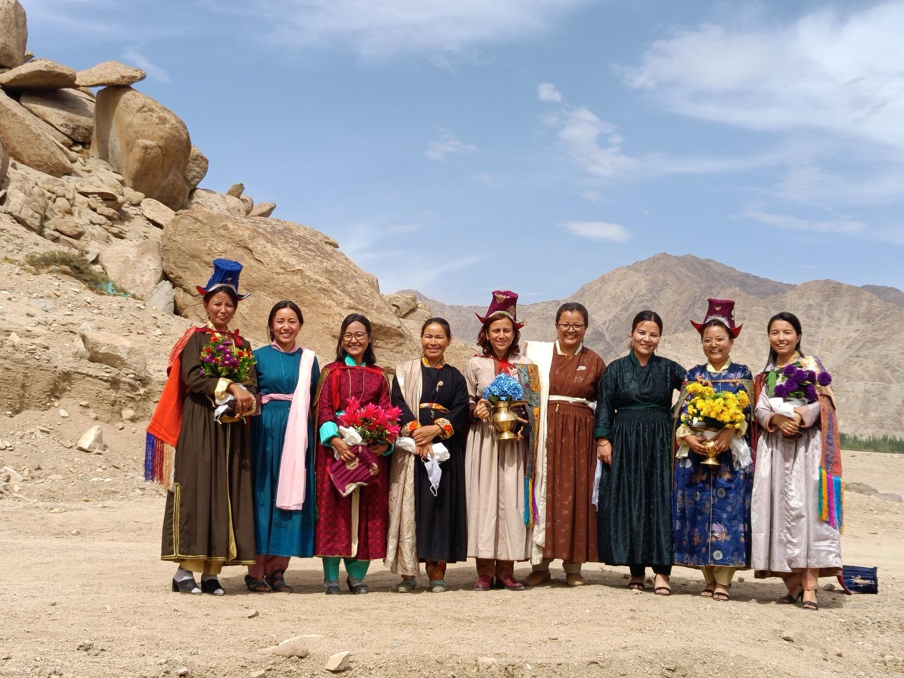
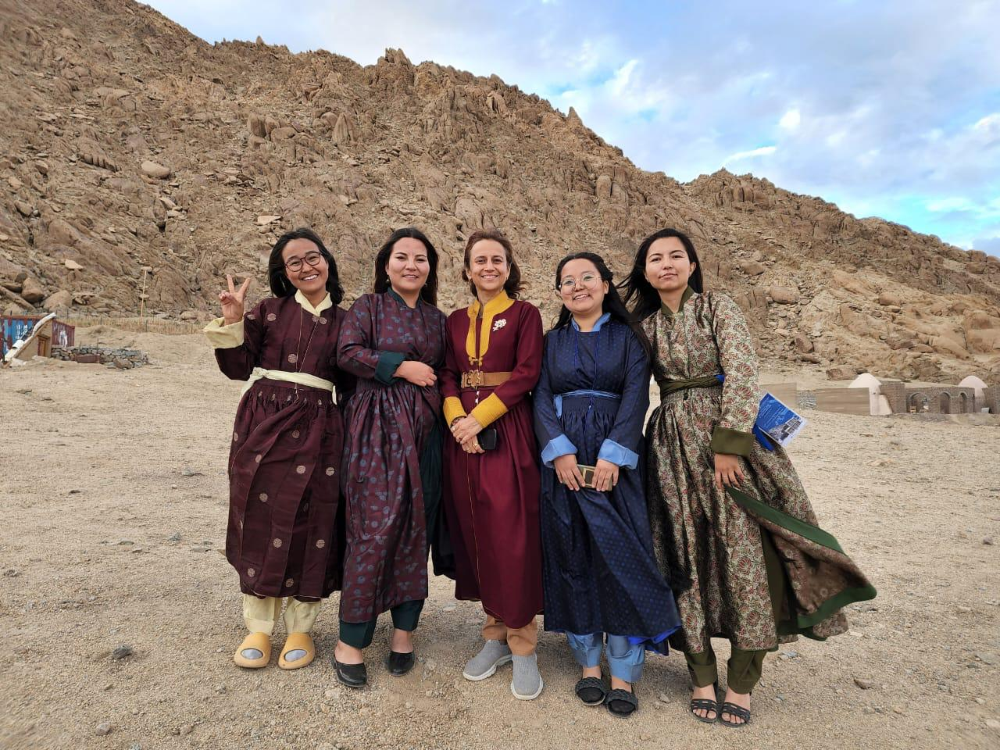

The Second Curve
A Five-Day Immersive Leadership Journey for Women
Rediscover Your Voice. Reclaim Your Calling. Reimagine Your Impact.
There comes a time in the life of every woman when the roles she
has so beautifully played begin to change. The children become
independent. Careers plateau or conclude. Parents age.
Relationships evolve. The applause fades, the deadlines disappear,
and a quiet question begins to echo within:
“Is this all, or is there still another life waiting
to be lived?”
At Dwijaa, we believe the answer is a resounding yes.
It is the voice that has waited patiently beneath years of
responsibility, sacrifice, and expectation. It is the voice that
refuses to believe that the second half of life should be smaller
than the first. At Dwijaa, we honour that voice.
The Sanskrit word Dwijaa means twice-born.
It symbolises not merely renewal but conscious rebirth. Just as a
bird is born once into existence and again when it discovers the
courage to fly, every woman deserves the opportunity to experience
a second awakening, one chosen not by circumstance but by
conviction.
The Second Curve is that invitation. It is an
invitation to rise beyond inherited ceilings, rediscover forgotten
dreams, find your authentic voice, and step into the work that only
you can do. It is for women who have spent years nurturing families,
organisations, communities, and institutions and who are now ready
to nurture the deepest calling within themselves and create a bigger
impact in the world.
The world has invested heavily in helping women enter the workforce. Far less attention has been given to helping them rediscover themselves after decades of responsibility and achievement. Many extraordinary women find themselves at crossroads. They have accumulated experience, wisdom, resilience, compassion, and influence, but they also carry untapped potential that has quietly waited for permission to emerge.
Some dream of building institutions. Some wish to mentor younger generations. Others long to start social enterprises, write books, enter public life, teach, create, advocate, heal, or simply live with greater authenticity. What often stands in their way is not the world. It is an invisible inner ceiling. Dwijaa is designed to help women break through that ceiling.
This is not merely a leadership programme. It is a sanctuary for courageous conversations, deep reflection, meaningful friendships, and bold reinvention — a place where women gather not to compete, but to grow together, support one another, and imagine the next impactful chapter of their lives with courage and clarity.
Nestled amidst the breathtaking landscapes of Ladakh and the pioneering ecosystem of the Himalayan Institute of Alternatives, Ladakh (HIAL), Dwijaa invites participants to journey through both the majestic Himalayas outside and the unexplored Himalayas within.
Dwijaa has been thoughtfully designed for women who feel called toward a meaningful second chapter in life. The programme is particularly suited for women aged 40 years and above who are seeking to reconnect with purpose, leadership, creativity, entrepreneurship, public service, education, or social impact.
It welcomes professionals, homemakers, entrepreneurs, educators, artists, executives, public servants, philanthropists, and changemakers who bring rich life experience and an openness to transformation.
Participants need not arrive with a perfectly defined plan. Curiosity, sincerity, and a willingness to explore are the only prerequisites.

At Dwijaa, we believe that leadership is not first exercised over others. It begins with leadership over one’s own thoughts, emotions, choices, and aspirations.
The programme draws upon timeless Indian wisdom, contemporary leadership practice, reflective inquiry, neuroscience, systems thinking, and experiential learning to help participants cultivate both inner and outer excellence. Rather than offering ready-made answers, Dwijaa creates conditions in which each woman may discover her own answers.
By the end of the five-day journey, participants will have developed greater clarity about their values, strengths, and long-term aspirations. They will gain practical frameworks for leadership, communication, negotiation, decision-making, and systems thinking while strengthening their emotional resilience and confidence.
The programme encourages participants to identify opportunities for entrepreneurship, public leadership, philanthropy, mentoring, institution-building, and social innovation. Most importantly, it seeks to rekindle the courage to dream again and the conviction that the most meaningful contribution of one’s life may still lie ahead.
Each participant will leave with a personal roadmap for her “Second Curve” and the support of a lifelong network of fellow women leaders.
By the end of five transformative days, participants will possess something far more valuable than notes or certificates — a renewed sense of identity and a clearer understanding of the contribution they are uniquely called to make in the world.
They will gain practical tools in leadership, communication, negotiation, decision-making, financial literacy, storytelling, entrepreneurship, and systems thinking while strengthening emotional resilience and self-belief. More importantly, they will begin to dismantle the invisible barriers that have held them back, replacing self-doubt with courage and hesitation with conviction. Every participant will leave with the beginnings of a personal action plan for her Second Curve, and with something equally precious: a lifelong sisterhood of fellow travellers.
Dwijaa is not intended to end after five days. It is designed to become a community that continues to celebrate, mentor, challenge, and uplift one another for years to come. The friendships formed here are expected to become collaborations, partnerships, accountability circles, and enduring sources of strength through every future season of life.
Dwijaa is intentionally immersive. Participants stay together in beautiful farm stays and resorts overlooking the timeless flow of the Indus River while spending significant time at the HIAL and SECMOL campuses and in carefully curated experiences across Ladakh. Shared meals, mountain walks, reflective silences, spontaneous conversations, serendipitous encounters and moments of laughter often become as transformative as the formal curriculum itself. Participants explore not only the landscapes of Ladakh but also the landscapes within themselves.
The investment for this immersive experience is ₹96,000 per participant. This includes six nights of accommodation at premium resorts and farm stays in Ladakh, five days of intensive programming, curated excursions, local transport associated with programme activities, learning materials, mentorship sessions, community experiences, and all meals during the programme. Participants are requested to arrange their own travel to and from Leh.
There is a beautiful illusion that life peaks in youth. We believe the opposite. We believe there comes a moment when experience ripens into wisdom, when ambition matures into service, and when success quietly asks to be transformed into significance.
Perhaps this is your moment. Perhaps the dreams you postponed were not abandoned, only waiting. Perhaps your voice was never lost, only buried beneath responsibility. Perhaps the work that will define your legacy has not yet begun.
Come to Ladakh. Find your calling. Find your courage. Find your people. And discover that the most extraordinary chapter of your life may still be unwritten.
Your first flight taught you how to survive. Your second flight may teach you how to soar and change the world!